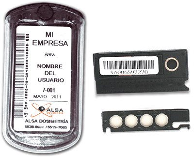

Dosimetría osl

El Servicio de Dosimetría OSL de ALSA
cuenta con la tecnología más avanzada
disponible para medir la exposición a la radiación.

DESCRIPCIÓN:
La tecnología OSL (Optically Stimulated Luminescence) tiene una precisión de + - 1 mrem, mientras TLD y la película requieren por lo menos 10 mrem para comenzar la presentación de informes.
A diferencia de TLD o películas, los dosímetros OSL proporcionan lecturas exactas de las dosis recibidas, incluso cuando se exponen a temperaturas extremas, humedad, aceite de los dedos o dañados significativos.
CARACTERÍSTICAS:
Los dosímetros OSL se pueden analizar varias veces, lo que permite investigación profunda en las exposiciones inusuales (incluyendo para determinar si una tarjeta de identificación fue usada en el momento de la exposición) gracias al sistema de control y monitoreo computarizado minimizando el margen de error.
Los dosímetros OSL también son capaces de almacenar datos por un periodo mucho más largo de tiempo, lo que le proporciona la flexibilidad para simplificar su programa de dosimetría y evitar riesgos de sobreexposición, entre otros.
DATOS COMPLEMENTARIOS: Para mayor información comunicarse a:

Tel./Fax: (55) 5538-8690
Lada sin costo: 01 800-045-2772
e-mail: ventas@arsamx.com
www.arsamx.com